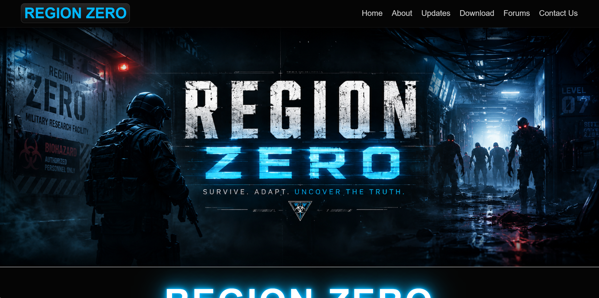
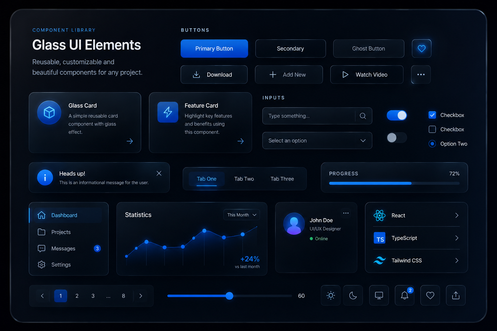

Reusable frosted panels with layered borders and mouse-position highlights.
Interactive frontend systems
Reusable web UI with a cinematic glass style.
This page is built to show my level of polish: glass components, mouse-reactive highlights, animated cards, responsive navigation, dynamic feeds, and clean reusable code.
Reusable components
UI systems that feel custom, not templated.
Accessible mobile navigation with state cleanup on resize and link clicks.
Drop in JSON-powered TikTok, updates, forum threads, or project previews.
Scroll-reactive background movement that gives the whole page subtle life.
Portfolio proof
Showcase cards for my strongest builds.

Game website
Region Zero
A dark sci-fi community site with dynamic development feeds, forum previews, and a strong identity built around glowing interactive elements.

Visual frontend
Glass Portfolio
A high-end personal portfolio concept using transparent panels, hover lighting, 3D cards, video backgrounds, and cinematic layout.

Client-ready kit
Reusable UI Package
A starter kit you can reuse for local businesses, creator sites, dev portfolios, landing pages, and premium web redesign pitches.
Dynamic social proof
TikTok dev feed
Add video IDs in videos.json and the page builds the embeds automatically.
Add TikTok IDs to
videos.json to populate this section.Community layer
Latest threads
Drop in forum JSON and this section becomes a live activity preview.
Forum preview ready
Add Forums/forumData.json to load real community activity.
Let’s build something polished
Clean frontend with a custom visual identity.
This layout is built to impress clients, bootcamp mentors, employers, and followers by showing both creativity and practical reusable code.